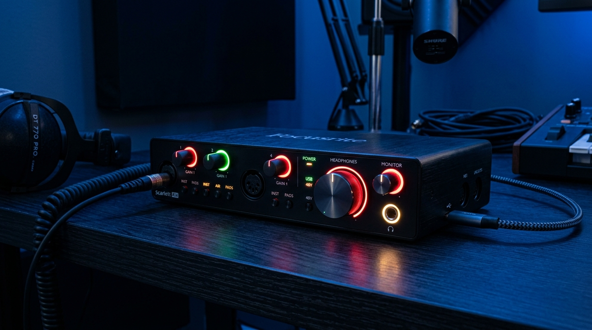
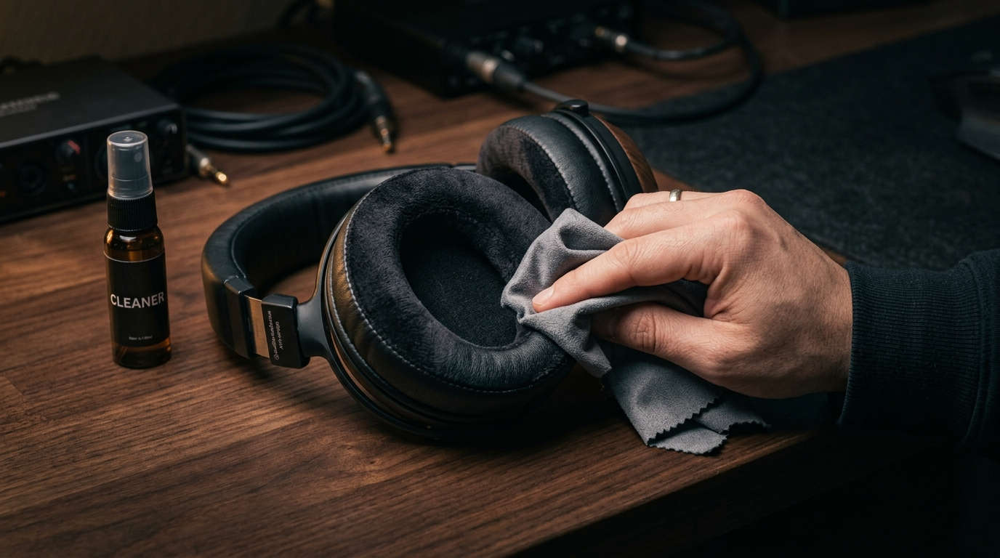

STARTER PICK
STARTER PICKAUDIO-TECHNICA
ATH-M20x
Simple wired monitoring for getting started.
THE HEADPHONE EDIT
Explore a starter selection of studio headphones and learn what each style is made for.
Showing 6 example products
STARTER PICKAUDIO-TECHNICA
Simple wired monitoring for getting started.
SONY
A familiar choice for recording and monitoring.
 COMFORT FOCUS
COMFORT FOCUSBEYERDYNAMIC
Closed-back listening for studio sessions.
VERSATILEAUDIO-TECHNICA
A versatile model for monitoring and everyday listening.
 OPEN-BACK
OPEN-BACKSENNHEISER
An open-back option for focused listening in a quiet room.
 ALL-ROUNDER
ALL-ROUNDERAKG
A foldable closed-back option for several workflows.
Product descriptions are introductory examples. Confirm current specifications, versions, pricing, and availability with the manufacturer or retailer before purchasing.
AUDIO CHARACTERISTICS
Uncolored audio reproduction designed for critical mixing and mastering where transparency is required.
Slightly boosted bass and treble response providing energetic playback for beatmaking and casual monitoring.
Emphasizes vocal clarity and high frequencies to highlight flaws, edits, and background noise during tracking.
Open acoustic enclosures that simulate natural room acoustics for binaural mixing and immersive audio.
GEAR INTEGRATION

Connect low-impedance (under 80Ω) headphones directly to USB audio interfaces or laptops without requiring an external amplifier.
Ensure you have a screw-on 1/4" (6.35mm) stereo adapter for standard audio interfaces, mixers, and headphone distribution amps.

Clean leatherette or velour cushions periodically to preserve acoustic seal, low-end extension, and long-term wearing comfort.
QUICK SELECTION MATRIX
High sound isolation prevents backing tracks from leaking into live condenser microphones during vocal takes.
Breathable earcups create an ultra-wide, natural acoustic soundstage for balance decisions in quiet control rooms.
Collapsible design with high sensitivity for editing podcast dialog on laptops and mobile recording rigs.